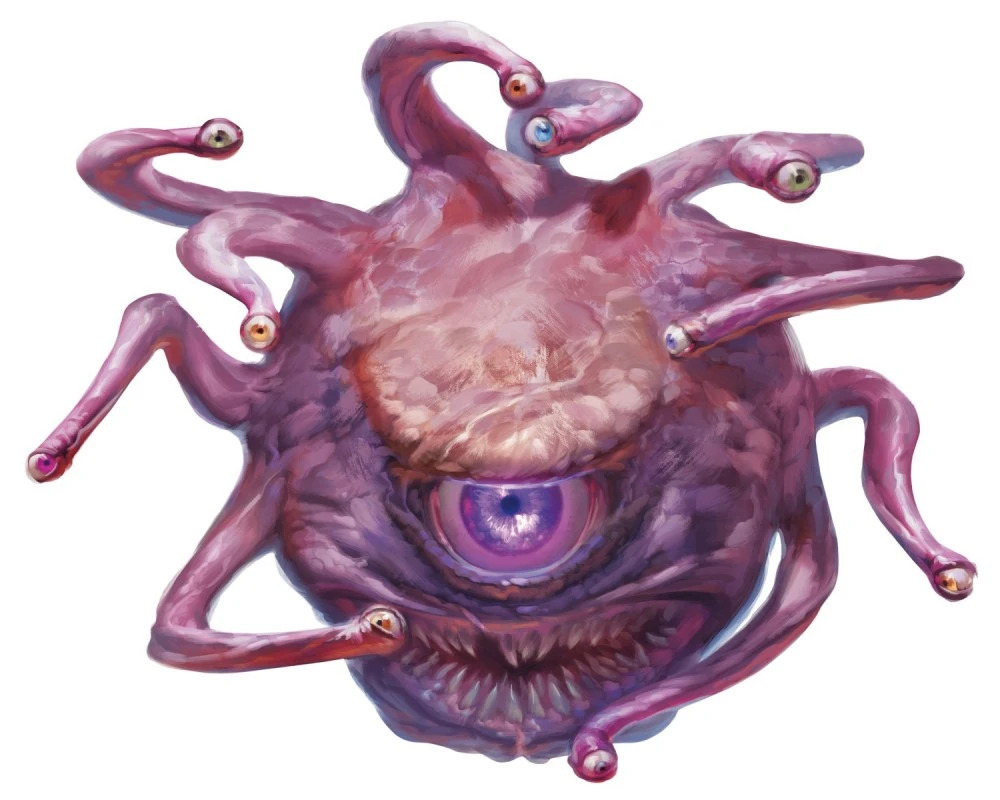
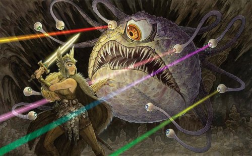

Omnivorous, genderless, and highly dangerous, beholders are a type of aberration that can commonly be found in the Underdark or in realm space. The most identifiable feature about these creatures are their large, central eye and the numerous tentacle-like eye stalks that jut out from their central body. While these creatures can't see color, they have impressive sight in the dark. The numerous amount of eyes beholders have make it nigh impossible to surprise them, as they can look at multiple directions at once.
